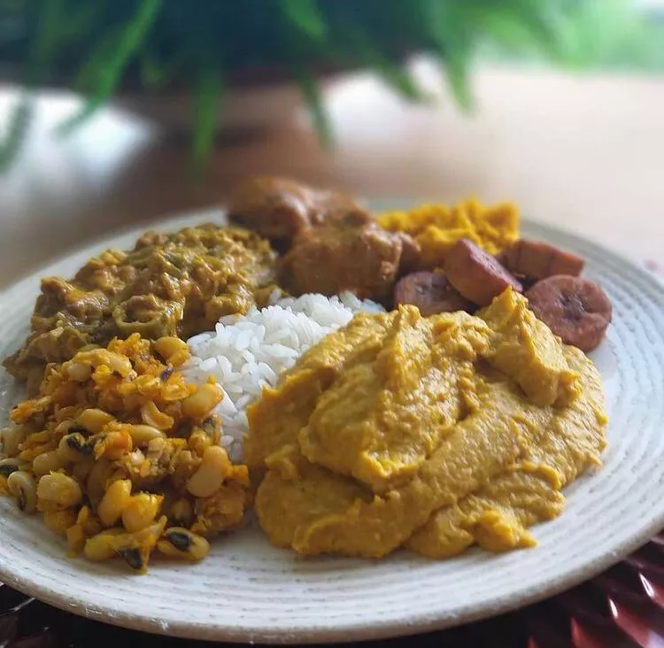

Caruru Pantaneiro
Prato tradicional do Pantanal, feito com caruru (uma verdura típica), temperos regionais e, às vezes, peixes, servido como acompanhamento ou prato principal.

Ingredientes
- 500 g de folhas de caruru limpas
- 1 cebola picada
- 2 dentes de alho amassados
- 2 tomates picados
- 2 colheres de sopa de óleo
- Sal e pimenta a gosto
Modo de Preparo
- Em uma panela, aqueça o óleo e refogue cebola e alho.
- Adicione o tomate e cozinhe até formar um molho.
- Junte o caruru e cozinhe até murchar, temperando com sal e pimenta.
- Sirva quente como acompanhamento ou prato principal.
Dica do Chef: Use caruru fresco e jovem para evitar folhas muito fibrosas. Pode acompanhar arroz e peixe assado.